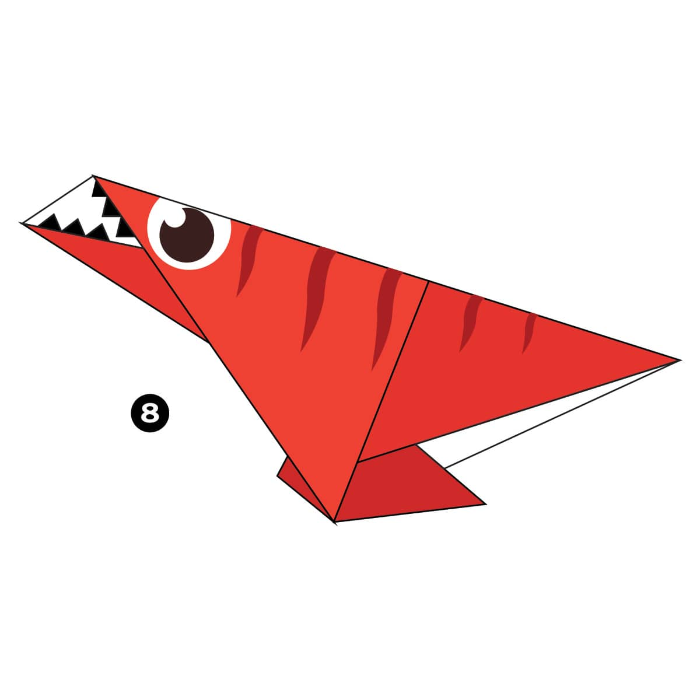
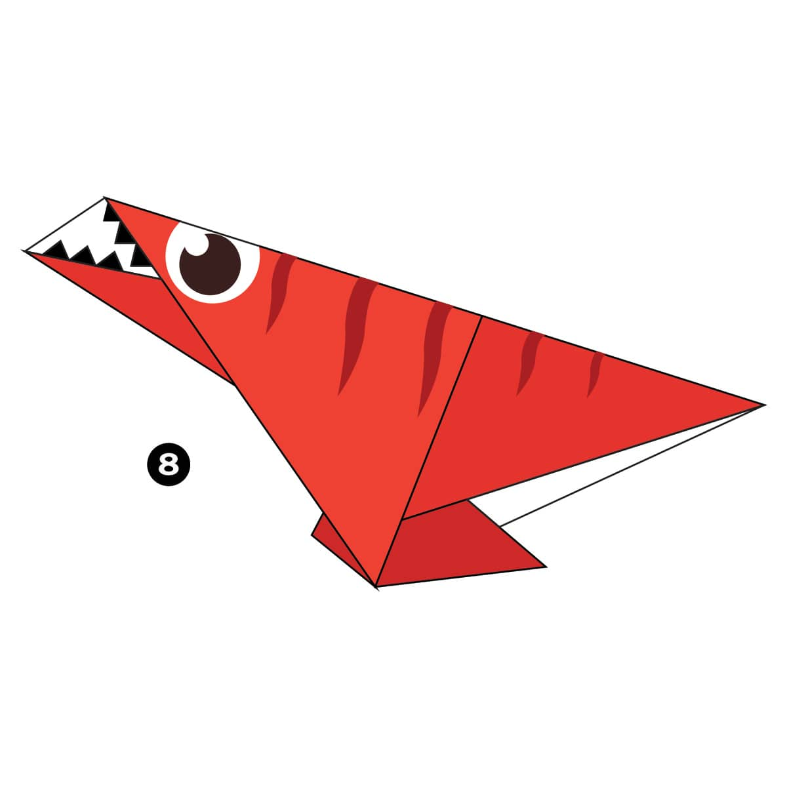

1.The fastest time to make 100 origami cranes is 40 minutes 35 seconds, achieved by Yoneyama Yuichi (Japan) in Nagoya, Japan, on 30 November 2010. That’s an average of 24.35 seconds for each crane!
2.Akira Yoshizawa is considered the Grand Master of modern Origami. He created over 50,000 origami models, invented wet-folding, and developed a method of diagramming origami instructions.
3.The Guinness Book of World Records has dozens of entries for origami from most folds, to smallest and biggest and more! Can you guess the fastest time for folding 100 cranes?